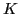

Next: Curvature of a circle Up: Curvature; radius of curvature Previous: Curvature; radius of curvature Contents Index
The shape of a curve depends very largely upon the rate at which the direction of the tangent changes as the point of contact describes the curve. This rate of change of direction is called curvature and is denoted by . We now proceed to find its analytical expression, first for the simple case of the circle, and then for curves in general.